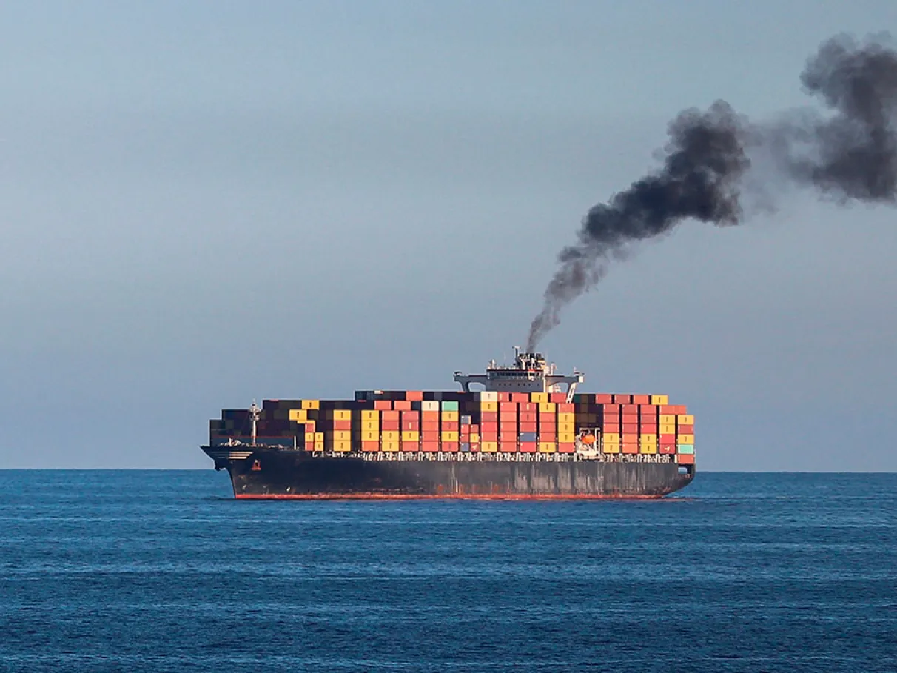
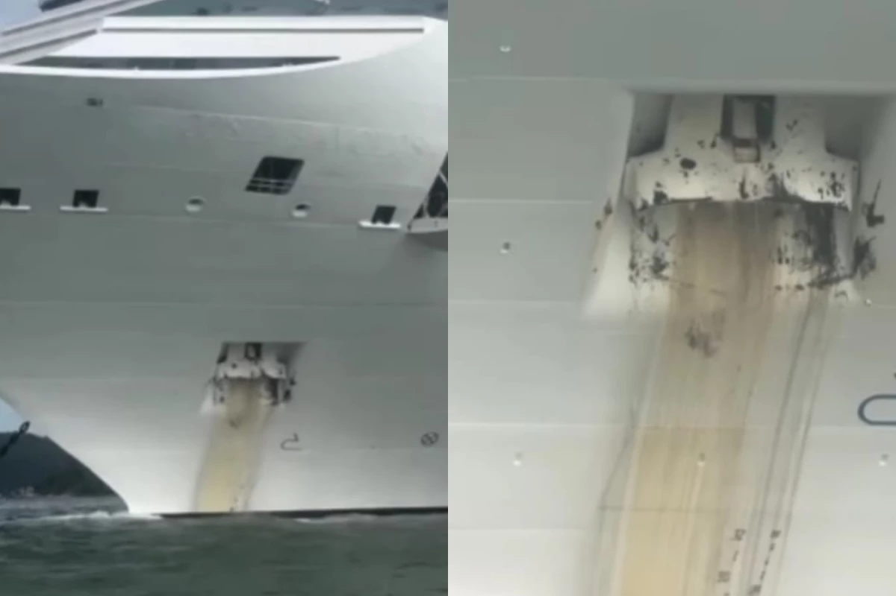
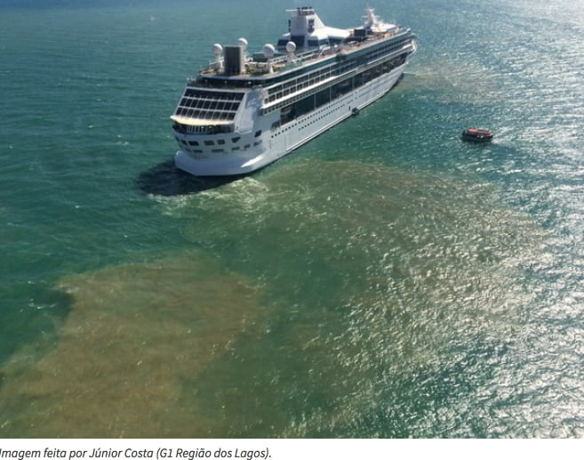

Barcos e seus efeitos no mar
A navegação marítima é essencial para o comércio global, o turismo e a pesca, mas os barcos e navios também trazem sérios impactos ao ecossistema marinho. Um dos maiores problemas é a poluição por combustíveis fósseis, já que embarcações movidas a diesel emitem gases como óxidos de enxofre (SOx) e óxidos de nitrogênio (NOx), que contribuem para a chuva ácida e o aquecimento global. Além disso, vazamentos de óleo e derramamentos acidentais podem causar danos catastróficos à vida marinha, contaminando corais, peixes e aves por décadas.
Outro efeito preocupante é a poluição sonora submarina, que interfere na comunicação de animais como baleias e golfinhos, essenciais para sua navegação e caça. Estudos indicam que o ruído constante de motores e hélices desorienta essas espécies, aumentando o risco de encalhes e reduzindo suas chances de sobrevivência. Além disso, a introdução de espécies invasoras através da água de lastro usada para equilibrar os navios ameaça ecossistemas locais, desequilibrando cadeias alimentares e provocando a extinção de espécies nativas.
O tráfego intenso de embarcações também está relacionado a colisões com animais marinhos, especialmente baleias e tartarugas, que muitas vezes são feridas ou mortas por hélices e cascos de navios. Em rotas turísticas, a aproximação excessiva de barcos pode perturbar o comportamento natural de espécies, como golfinhos, que acabam abandonando áreas de reprodução. A pesca predatória e o uso de redes ilegais por algumas embarcações agravam ainda mais a pressão sobre populações de peixes já ameaçadas pela sobrepesca.

Fonte Disponível em: Diario do Nordeste

Fonte Disponível em: Super Abril
No entanto, medidas sustentáveis vêm sendo adotadas para reduzir esses impactos. A Organização Marítima Internacional (IMO) estabeleceu regras mais rígidas para emissões de poluentes, incentivando o uso de combustíveis menos danosos e a adoção de tecnologias como motores elétricos e painéis solares em barcos. Algumas empresas também investem em sistemas de tratamento de água de lastro e monitoramento de rotas para evitar áreas sensíveis.
O turismo náutico também pode se tornar mais ecológico com a popularização de barcos movidos a energia limpa e a conscientização de passageiros sobre a importância de preservar os oceanos. Projetos como os "blue corridors" rotas marítimas que evitam habitats críticos demonstram que é possível conciliar a navegação com a conservação marinha. Ações individuais, como o descarte correto de lixo e o respeito às zonas de proteção, também fazem diferença.
Diante desse cenário, cientistas e ambientalistas reforçam a necessidade de estudos mais aprofundados sobre os efeitos cumulativos da navegação nos oceanos. Sem ações concretas e globais, os danos podem se tornar irreversíveis, ameaçando não apenas a vida marinha, mas também as comunidades costeiras que dependem dos recursos do mar para sobreviver. O equilíbrio entre desenvolvimento econômico e preservação ambiental permanece um desafio urgente e complexo.
Vazamentos de Combustível no Mar
Os vazamentos de combustível provenientes de barcos e navios representam um dos maiores riscos ambientais para os oceanos, com consequências que podem perdurar por décadas. Acidentes com petroleiros, como os famosos casos do Exxon Valdez (1989) e do Prestige (2002), mostram como milhares de toneladas de óleo podem devastar ecossistemas costeiros, matando aves, peixes e mamíferos marinhos. No entanto, além desses grandes desastres, vazamentos menores e contínuos como os de embarcações de pesca, barcos de turismo e até navios de carga também acumulam impactos graves ao longo do tempo.
Um dos principais problemas é a composição tóxica dos combustíveis marítimos, como o bunker, um derivado de petróleo denso e altamente poluente. Quando liberado no mar, esse material forma uma camada espessa na superfície da água, impedindo a passagem de luz e reduzindo o oxigênio disponível para a vida marinha. Além disso, substâncias como benzeno e metais pesados contaminam a cadeia alimentar, intoxicando desde plânctons até grandes predadores, como tubarões e baleias. Em regiões de manguezais e recifes de coral, os efeitos são ainda mais devastadores, com recuperação que pode levar séculos.
Os métodos de limpeza, como barreiras flutuantes e dispersantes químicos, muitas vezes são insuficientes ou até mesmo prejudiciais. Os dispersantes, por exemplo, quebram o óleo em partículas menores, mas não o eliminam, permitindo que a poluição se espalhe pela coluna d’água e afete organismos em diferentes profundidades. Enquanto isso, o óleo que se deposita no fundo do mar pode permanecer ativo por anos, intoxicando bentos (organismos que vivem no leito oceânico) e comprometendo a fertilidade de ecossistemas inteiros.
Além dos danos ecológicos, os vazamentos afetam diretamente comunidades costeiras que dependem da pesca e do turismo. No Brasil, por exemplo, o derramamento de óleo que atingiu o Nordeste em 2019 ainda de origem não totalmente esclarecida causou prejuízos econômicos e sociais imensos, com pescadores perdendo suas rendas e praias sendo interditadas. Casos como esse expõem a fragilidade dos sistemas de monitoramento e resposta a emergências, especialmente em países em desenvolvimento, onde a fiscalização é mais precária.
Apesar das regulamentações internacionais, como a MARPOL (Convenção Internacional para a Prevenção da Poluição por Navios), muitos acidentes ainda ocorrem devido a falhas humanas, negligência na manutenção de embarcações ou más condições climáticas. Navios clandestinos e operações de transferência de combustível em alto mar, frequentemente feitas sem os devidos cuidados, agravam o problema. Além disso, o aumento do transporte marítimo global, impulsionado pelo comércio eletrônico e pela indústria do turismo, eleva o risco de novos desastres.
Diante desse cenário, especialistas defendem investimentos em tecnologias mais seguras, como navios com cascos duplos e sistemas de navegação automatizados, além de maior rigor nas inspeções. Enquanto isso, pesquisas com microrganismos que "se alimentam" de petróleo processo chamado biorremediação surgem como uma esperança para mitigar danos.
Lançamento de Esgoto a Bordo
A prática de despejar esgoto não tratado diretamente no mar ainda é uma realidade em muitas embarcações, causando danos severos aos ecossistemas oceânicos. Navios de cruzeiro, por exemplo, podem gerar até 250 mil litros de esgoto por dia, segundo estudos ambientais, grande parte liberado sem o devido tratamento. Esse efluente contém bactérias patogênicas, metais pesados, produtos químicos e matéria orgânica em decomposição, que desequilibram o ambiente marinho e ameaçam espécies em todos os níveis da cadeia alimentar.
Um dos impactos mais graves é a eutrofização o excesso de nutrientes como nitrogênio e fósforo no esgoto estimula o crescimento descontrolado de algas, que consomem o oxigênio da água e criam "zonas mortas". Essas áreas, onde a vida marinha praticamente desaparece, já somam mais de 500 regiões no mundo, incluindo o Golfo do México e o Mar Báltico. Corais, extremamente sensíveis a mudanças na qualidade da água, também sofrem branqueamento e morte devido à contaminação por esgoto e produtos químicos despejados por navios.
Além da poluição química, o esgoto de barcos introduz vírus e bactérias perigosas no oceano, afetando animais marinhos e até mesmo humanos. Golfinhos e focas, por exemplo, estão cada vez mais vulneráveis a doenças transmitidas por fezes humanas, como a coccidioidomicose, uma infecção fatal. Em áreas costeiras, onde o esgoto se acumula, a contaminação por E. coli e outros patógenos torna praias impróprias para banho e ameaça a saúde de banhistas e pescadores.

Fonte Disponível em: correio braziliense

Fonte Disponível em: Mar sem Fim
Apesar de a MARPOL (Convenção Internacional para Prevenção da Poluição por Navios) proibir o lançamento de esgoto não tratado próximo à costa, muitas embarcações burlam as regras ou operam com sistemas de tratamento ineficientes. Navios mais antigos, principalmente, ainda utilizam tanques de retenção precários, que muitas vezes vazam ou são esvaziados ilegalmente em alto mar, onde a fiscalização é mais difícil. Além disso, a falta de monitoramento por satélite e a lentidão nas punições facilitam a impunidade.
Os animais marinhos são os mais afetados por essa poluição invisível. Tartarugas, que confundem sacolas plásticas com águas-vivas, também ingerem partículas de fezes humanas e produtos químicos, sofrendo intoxicação e morte lenta. Peixes e moluscos, ao absorverem toxinas do esgoto, tornam-se vetores de doenças para humanos quando consumidos. Em regiões como o Caribe e o Mediterrâneo, onde o turismo de cruzeiro é intenso, pesquisas já encontraram vestígios de antibióticos e hormônios na água, provenientes do esgoto despejado por grandes navios.
Enquanto algumas empresas investem em tecnologias avançadas de tratamento de efluentes, como sistemas de osmose reversa e ultravioleta, a maioria das embarcações ainda opera com padrões insuficientes. Ambientalistas pressionam por leis mais rígidas e penalidades severas para quem descumpre as normas, mas a implementação global é lenta.
Videos Relacionados a Leitura
Vazamento de Óleo no Mar
Vazamento de óleo no mar, desastre ambiental
Esvaziamento de Porão
Apoluição que você pode nunca ter ouvido falar